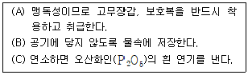

위험물기능사 (2002-01-27 기출문제)
1과목: 화재 예방과 소화방법
1. 탄산칼륨이 주성분으로 한냉지에서 사용되는 소화기는?
- 분말 소화기
- 강화액 소화기
- 포말 소화기
- 이산화탄소 소화기
(정답률: 75%)

2. 분말 소화약제의 가압용 및 축압용가스는?
- 네온가스
- 프로판가스
- 수소가스
- 질소가스
(정답률: 86%)
3. 분말소화기는 어떤 미립자를 방습 가공한 것을 탄산가스나 질소가스의 압력으로 분사 시키도록 만든 것이다. 이 미립자는 무엇인가?
- 탄산수소나트륨
- 탄산나트륨
- 탄산칼슘
- 탄산알루미늄
(정답률: 60%)
4. 소화제(消化劑)로서 사용할 수 없는 물질은?
- 액화 이산화탄소
- 인산암모늄
- 탄산수소나트륨
- 아세톤
(정답률: 76%)
5. 포말소화기의 보존 및 사용상의 주의사항에서 틀리는 것은?
- 전기나 알콜류 화재에는 사용치 못한다.
- 동절기에도 좋다.
- 사용후에는 깨끗이 물로 닦은후 국가검정에 합격된 소화약제를 충전하고 합격표지를 부착한다.
- 안전한 장소에 넘어지지 않게한다.
(정답률: 31%)
6. 다음 화재의종류 중 유류화재로서 연소후 아무것도 남지 않은 화재는?
- A급 화재
- B급 화재
- C급 화재
- D급 화재
(정답률: 72%)
7. 다음 화합물 중 소화제로 사용되지 않는 것은?
- CHBr2Cℓ
- NaHCO3
- Na2SO4
- Aℓ2(SO4)3
(정답률: 36%)
8. 수소, 아세틸렌과 같은 가연성 가스가 공기중에 누출시, 연소 형식으로 옳은 것은?
- 확산 연소
- 증발 연소
- 분해 연소
- 표면 연소
(정답률: 64%)
9. 다음 약품 중 소화제로 사용되지 않는 것은?
- 탄산칼슘
- 탄산수소나트륨
- 황산알루미늄
- 사염화탄소
(정답률: 22%)
10. 다음 중 알콜 화재시 소화제로 적당하지 않은 것은?
- 석면포
- 물
- 모래주머니
- 드라이 아이스
(정답률: 62%)
11. 다음 중 포 소화설비의 특징이 아닌 것은?
- 옥외 소화에도 소화 효력을 충분히 발휘한다.
- 재 연소가 예상되는 화재에도 소화가 가능하다.
- 인접되는 방호대상물에 연소 방지책으로 최적격이다.
- 기화할 때의 체적 팽창율이 1,650배로 연소면을 덮어 산소를 차단한다.
(정답률: 30%)
12. 자기반응성 물질인 위험물의 화재시 소화대책으로 적합하지 않은 것은?
- 질식소화는 적당하지 않다.
- 일반적으로 다량의 주수에 의한 냉각소화가 양호하다.
- 공기호흡기를 착용하고 바람의 위쪽에서 소화작업을 한다.
- 산소를 함유하지 않은 아조화합물류, 히드라진 등은 할로겐화물소화약제(할론1211, 할론1301)도 유효하다.
(정답률: 9%)
13. 다음 중 자연발화를 예방하는 방법으로 적당하지 않은 것은?
- 주위온도가 높지 않도록 할 것
- 열의 축적이 되지 않도록 할 것
- 적당량의 수분을 유지하여 건조하지 않도록 할 것
- 공기와 접촉하는 면이 넓지 않도록 할 것
(정답률: 58%)
14. 다음 소화방법에 대한 설명으로 틀린 것은?
- 제거소화란 가연물을 연소구역에서 없애주는 방법이다.
- 억제소화란 연소의 계속은 가연물의 분자가 활성화되어 느리게 하는 용매를 사용하는 방법이다.
- 냉각소화란 연소물로부터 열을 빼앗아 발화점 이하로 온도를 낮추는 방법이다.
- 질식소화란 공기중 산소농도를 약 20% 에서 5%이하로 떨어뜨려 연소를 중단시키는 방법이다.
(정답률: 48%)
15. 다음 연소의 난이성을 설명한 것으로 틀린 것은?
- 산화되기 쉬운 것일수록 타기 쉽다.
- 산소와의 접촉면적이 큰 것일수록 타기 쉽다.
- 발열량이 큰 것일수록 타기 쉽다.
- 열전도율이 큰 것일수록 타기 쉽다.
(정답률: 65%)
16. 다음은 화재 위험에 관한 위험물 제조, 저장, 취급소 주변의 환경 조건에 대한 설명으로 틀린 것은?
- 온도가 높을 때에는 위험하다.
- 풍향은 풍상쪽이 위험하다.
- 같은 것을 취급하는 경우에도 그 취급 여하에 따라서 위험의 정도가 다르게 된다.
- 압력이 클 때에는 위험하다.
(정답률: 65%)
17. 다음 중 폭발에 대한 내용을 바르게 설명한 것은?
- 가연성 기체 또는 액체의 열의 발생속도가 열의 일산속도를 상회하는 현상
- 가연성 기체 또는 액체의 열의 일산속도가 열의 발생속도를 상회하는 현상
- 가연성 기체 또는 액체의 열의 발생속도가 열의 연소속도를 상회하는 현상
- 가연성 기체 또는 액체의 열의 연소속도가 열의 발생속도를 상회하는 현상
(정답률: 16%)
18. 축압식을 사용하는 ABC 분말소화기의 압력지시계의 지시압력은 몇 Kg/㎝2 를 유지해야 하는가?
- 약 15 Kg/㎝2
- 7 ‾ 8 Kg/㎝2
- 약 60 Kg/㎝2
- 7.0 ‾ 9.8 Kg/㎝2
(정답률: 37%)
19. D급 화재 소화에 사용할 수 없는 소화제는?
- 팽창질석
- 마른모래
- 팽창진주암
- 강화액
(정답률: 79%)
20. 자연발화성 물질 및 금수성물질의 위험물 화재시 가장 적당한 소화방법은?
- 분무소화기
- 포말소화기
- 할론소화기
- 마른 모래
(정답률: 70%)
2과목: 위험물의 화학적 성질 및 취급
21. KIO3에 대한 설명중 옳지 않은 것은?
- 염소산 칼륨보다는 위험성이 작다.
- 광택이 나는 무색의 결정성 분말이다.
- 물이나 알콜에는 녹으나 진한황산에는 녹지 않는다.
- 융점이상으로 가열하면 산소를 방출하며 가연물과 혼합하면 폭발위험이 있다.
(정답률: 45%)
22. 다음 중 질산암모늄의 성상이 올바른 것은?
- 상온에서 황색의 액체이다.
- 상온에서 폭발성의 액체이다.
- 물을 흡수하면 흡열반응을 한다.
- 녹색, 무취의 결정으로 알콜에 녹는다.
(정답률: 44%)
23. 과산화 나트륨에 대한 설명으로 틀린 것은?
- 알콜에 녹아 산소를 발생시킨다.
- 상온에서 물과 격렬하게 반응하며 열을 발생한다.
- 순수한 것은 백색이지만 보통 황색의 분말 또는 과립상이다.
- 강산화제로서 금, 니켈을 제외한 다른 금속을 침식하여 산화물을 만든다.
(정답률: 40%)
24. 황린은 자연발화하기 쉬운데 그 이유는?
- 가열하면 산소를 발생한다.
- 착화온도가 낮다.
- 수소를 발생한다.
- 가연성 가스를 발생한다.
(정답률: 56%)
25. 유황의 성질에 대한 설명중 잘못된 것은?
- 조해성이 있다.
- 황색의 고체 또는 분말이다.
- 연소시 독특한 냄새를 가진 가스를 발생한다.
- 착화온도는 약 360℃로 연소시 청색의 화염을 낸다.
(정답률: 29%)
26. 다음은 어떤 위험물인가?

- 적린
- 황화인
- 황린
- 금속분
(정답률: 52%)
27. 마그네슘(Mg)분이 더운물과 작용하였을때의 반응식을 나타낸 것은?
- 2Mg + 2H2O → 2MgH + O2↑
- Mg + 2H2O → MgOH + H2↑
- Mg + 2H2O → Mg(OH)2 + H2↑
- 2Mg + 2H2O → 2MgO + 2O2↑
(정답률: 50%)
28. 연소할 때 아황산가스를 발생하는 것은?
- 마그네슘 분
- 황린
- 적린
- 황
(정답률: 53%)
29. 다음 각 류별 위험물들이 서로 혼재하여도 가능한 것은?
- 제2류와 제5류
- 제2류와 제6류
- 제2류와 제3류
- 제2류와 제1류
(정답률: 68%)
30. 삼황화인이 연소할 때 생성되는 물질은?
- P2O5와 SO2
- P4O3와 SO2
- P4O7와 SO2
- P2O5와 SO3
(정답률: 47%)
31. 금속 칼륨(K)을 석유에 넣어 보관하는 이유는?
- 산화력이 커서
- 취급이 대단히 위험함을 표시하려고
- 수분과 접촉을 차단하고 공기 산화를 방지 하려고
- 마찰 충격을 방지 하려고
(정답률: 86%)
32. 카아바이트의 성질로 틀린 것은?
- 산화물을 환원시킨다.
- 물과 만난 뒤에는 소석회가 된다.
- 건조된 공기중에서 위험하지 않다.
- 탄화칼슘이 물과 만나면 메탄이 발생하고 생석회는 수소를 발생시킨다.
(정답률: 44%)
33. 제4류 위험물 분류로 옳은 것은?
- 제1석유류 : 아세톤, 가솔린, 이황화탄소
- 제2석유류 : 등유, 경유, 아크릴산
- 제3석유류 : 중유, 송근유, 비닐에테르
- 제4석유류 : 윤활유, 벤젠, 글리세린
(정답률: 62%)
34. 특수인화물류에 속하지 않는 것은?
- 에틸렌글리콜
- 트리클로로실란
- 산화프로필렌
- 아세트알데히드
(정답률: 27%)
35. 다음 알콜류 중 인화점이 가장 낮은 것은?
- 메틸알콜
- 에틸알콜
- n-부틸알콜
- 이소아밀알콜
(정답률: 28%)
36. 벤젠의 성상에 관한 설명중 틀린 것은?
- 벤젠의 증기는 마취성은 있으나 독성은 없다.
- 이황화탄소보다 착화온도가 높다.
- 비전도성이므로 취급할 때 정전기의 발생위험이 있다.
- 인화점은 상온이하 이다.
(정답률: 58%)
37. CS2(이황화탄소)의 성질에 대한 기술 중 옳지 않은 것은?
- 이황화탄소의 증기는 공기보다 무겁다.
- 순수한 것은 담황색 액체이다.
- 착화점은 약 100℃ 이다.
- 고무나 황 등을 잘 용해 시킨다.
(정답률: 45%)
38. 질산에틸에 관한 설명이다. 틀린 것은?
- 상온에서 고체다.
- 알콜에 잘 녹는다.
- 인화점이 높아 쉽게 연소되지 않는다.
- 비점이상으로 가열하면 폭발한다.
(정답률: 50%)
39. 제5류 위험물에 속하지 않는 물질은?
- 니트로 글리세린
- 니트로 벤젠
- 니트로 셀룰로오스
- 질산 에스테르
(정답률: 62%)
40. 질산에스테르류의 공통된 성질로서 옳은 것은?
- 산소를 함유한 무기물질이다.
- 산소 함유물이며 가연성 물질이다.
- 물과 작용하여 가연성 가스를 발생한다.
- 부식성이 강한 물질이다.
(정답률: 13%)
41. 다음 중 황산의 성질로써 옳지 않은 것은?
- 진한 황산은 흡습성이 크다.
- 황산에 물을 가하면 발열한다.
- 유기물질을 탄화한다.
- 휘발성 물질이다.
(정답률: 38%)
42. 질산(HNO3)의 성질로 맞는 것은?
- 공기 중에서 자연발화 한다.
- 충격에 의하여 자연발화 한다.
- 인화점이 낮아서 발화하기 쉽다.
- 물과 반응하여 강한 산성을 나타낸다.
(정답률: 52%)
43. 무수황산에 대한 설명으로 옳은 것은?
- 황산의 농도를 높여 거의 물을 함유하지 않은 것을 말한다.
- 진한 황산보다 농도가 높기 때문에 점성이 큰 액체이다.
- 공기중에서 흰연기를 내는 것은 공기중의 수분을 냉각시키기 때문이다.
- 황산과도 다른 분자구조를 갖는다.
(정답률: 22%)
44. 제5류 위험물의 공통된 취급 방법이 아닌 것은?
- 저장시 가열, 충격, 마찰을 피한다.
- 용기의 파손 및 균열에 주의한다.
- 포장외부에 "자연발화" 주의사항을 표기한다.
- 점화원 및 분해를 촉진시키는 물질로 부터 멀리한다.
(정답률: 64%)
45. 과산화나트륨(Na2O2)의 저장 및 취급시 주의 사항으로 틀린 것은?
- 물과의 접촉을 피한다.
- 유기물, 가연물, 황등의 혼입을 막는다.
- 가열, 충격을 피한다.
- 수분과 접촉을 피하기 위하여 에테르(C2H5OC2H5)속에 보관한다.
(정답률: 66%)
46. 인화석회(Ca3P2) 취급시 가장 주의해야 할 사항은?
- 화기의 접근
- 습기 및 수분
- 일광
- 충격 및 마찰
(정답률: 59%)
47. 과산화 수소의 성질 및 취급으로 옳지 않은 것은?
- 열 햇빛에 의하여 분해한다.
- 저장할 때 용기는 꼭 막아둔다.
- 물, 알콜에 용해한다.
- 냉암소에 저장한다.
(정답률: 48%)
48. 고체 위험물의 운반시 내장용기가 유리로서 최대용적이 10L인 수납 위험물의 종류가 아닌 것은?
- 1류
- 2류
- 3류
- 4류
(정답률: 34%)
49. 동.식물유류를 취급할 때의 주의사항 중 맞지 않는 것은?
- 아마인유는 건성유이므로 자연발화의 위험이 있다.
- 요오드값이 클수록 자연발화의 위험이 적다.
- 요오드값이 130 이상인 것이 건성유이므로 저장시 누출에 주의한다.
- 화재시 액온이 높아 소화가 곤란하다.
(정답률: 56%)
50. 피크린산의 저장 및 취급에 있어서 다음중 옳은 것은?
- 드럼통에 넣어서 밀봉
- 금속염을 만들어 저장
- 알콜속에 녹여서 저장
- 물에 녹여서 저장
(정답률: 44%)
51. 니트로셀룰로오즈를 저장 운반시 어느 물질에 습면하는 것이 좋은가?
- 에테르 또는 물
- 물 또는 알콜
- 파라핀
- 아세톤
(정답률: 34%)
52. 질산염류의 특성으로서 잘못된 것은?
- 화약의 원료로 사용된다.
- 산화제로 쓰인다.
- 조해성이 강하다.
- 금속을 부식시키는 특성이 있다.
(정답률: 8%)
53. 제4류 위험물의 위험성에 대한 설명중 틀린 것은?
- 액체 온도가 인화점 이상이며 인화될 위험성이 있다.
- 인화점이 높은 것은 가열해도 인화될 위험성은 없다.
- 인화점이 낮은 것은 증기량이 많이 생겨 인화범위도 넓어진다.
- 가연 액체의 연소범위 하한은 가연성 기체보다 낮다.
(정답률: 68%)
54. 제3류 위험물 중 물과 반응할 때 반응열이 가장 큰 것은?
- 탄화칼슘
- 수소화나트륨
- 금속나트륨
- 수소화칼슘
(정답률: 40%)
55. 위험물 옥내 저장소의 피뢰설비는 지정수량의 몇 배이상인 경우 저장창고에 설치해야 하는가?
- 10배이상
- 15배이상
- 20배이상
- 30배이상
(정답률: 61%)
56. 과망간산칼륨에 의해 쉽게 산화되는 유기 화합물은?
- C2H5OH
- CH3COOH
- CH3CHO
- CH3CH2CH3
(정답률: 22%)
57. 제1석유류가 400L 제2석유가 2000L 저장시 저장량의 합계는 지정수량의 몇 배인가?
- 3
- 4
- 5
- 6
(정답률: 20%)
58. 아세트알데히드 취급시 주의사항 중 옳은 것은?
- 공기와 접촉시킨다.
- 구리, 마그네슘 및 그의 합금과 접촉을 피한다.
- 직사광선에 노출시킨다.
- 용기파손에 주의 할 필요가 없다.
(정답률: 64%)
59. 셀룰로이드 저장 시 주의사항으로 틀린 것은?
- 저장실 온도는 상온 이상에서 보관한다.
- 환기를 잘한다.
- 취기나 변색에 주의한다.
- 화기는 절대로 피한다.
(정답률: 73%)
60. 제1종 가연물과 제2종 가연물 각각의 지정수량을 합한 값은?
- 1000kg
- 800kg
- 600kg
- 400kg
(정답률: 44%)